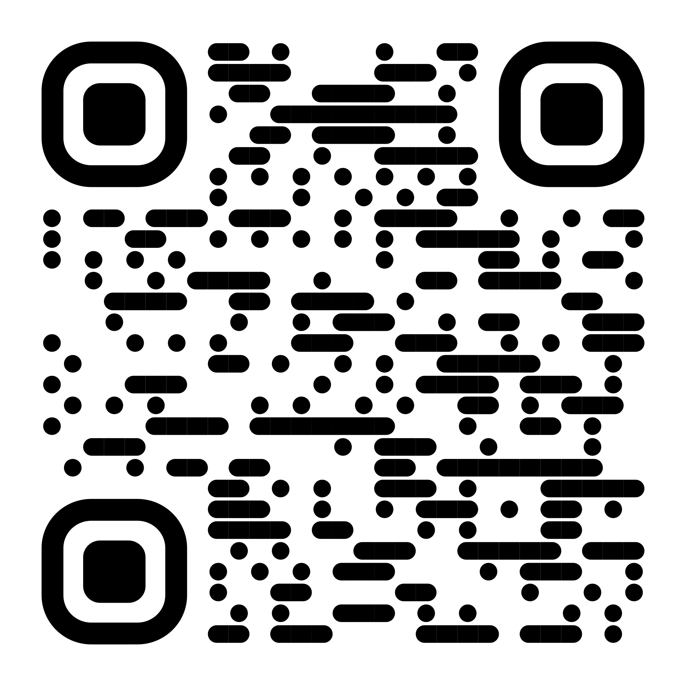
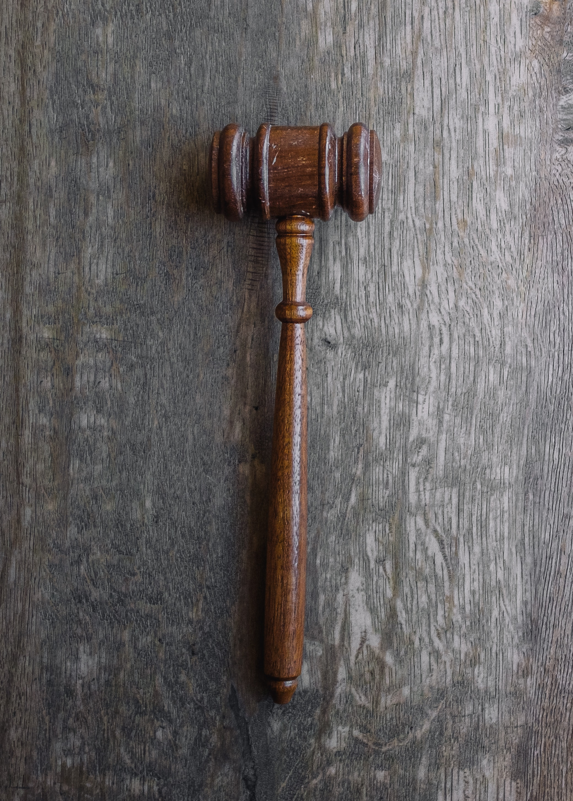

QR-Code

QR-Codes gibt es heuzutage überall denn sie sind sehr nüzlich. Sie vereinfachen das leben der
menschen enorm.
Wie zumbeispiel kann man auf einem QR-Code ein Wlan mit passwort aufsetzten und dann muss man nur
noch den QR-Code scannen und man ist mit dem Wlan verbunden
Benutzung
Ein QR-Code kann man ganz einfach und kostenlos erstellen. Sogar wenn man keine Ahnung von Infomatik
oder Technik hat.
Es geht wiefolgt. Als erstes suchst du im Internet nach QR Code Generator. Danach wählst du eine
seite dei vertrauenswürdigaussieht.
(QRcode Monkey ist sehr
empfehlenswert und volkommen
gratis)
Nachdem wählst du auf der Seite aus für was der QR-Code sein sollte. Zum Beispiel ein Text oder eine
URL (link).
Dann gibst du deinen gewünschten Text oder anderes ein und drückst aus QR-Code Generieren.
Jetzt kannst du ihn als jpg (komprimiertes Bildformat) oder was anderes Herunterladen.
Du kannst das bild dann öfnen und mit deiner Smartphonekamera den QR-Code Scannen und schon hast du
es geschaft.
Einsatz Möglichkeiten:
- Texte
- URL's
- Bilder
- Audio/Videodateien
- Fahrplähne
- Digitale Visitenkarten
- Geodaten
- Telefonummern
Fazit
QR-Codes werden überall gebraucht uns sind sehr nützlich für jeden Ersteller und verwender.
Es gibt so viele möglichkeiten einen QR-Code zu verwenden und es ist komplett Kostenlos.
Obligationsrecht (OG)

Der Begriff (Obligation) stammt vom lateinischen Wort (obligare), was mit (verpflichten) übersetzt
werden kann. Im Obligationenrecht geht es also vor allem um Verpflichtungen oder unterschiedlich
formuliert um Schuldverhältnisse oder Verträge. Die eine politische Partei, der Gläubiger, darf vom
sonstigen, dem Schuldner, eine Leistung fordern.
Verträge
Verträge finden überall statt manchmal merkt man es nicht einmal. Vorallem nicht wenn man sich das
theme nicht voher mal angeschaut hat. Jeder einkauf, jede abmachung, jeder Mietvertrag ist ein
Vertrag. Wenn man etwas beom Coop kauft geht man einen Vertrag ein egal ob an der Kasse oder am
Selbszahlautomat oder wenn man jemandem Geld ausleiht und abmacht bis wann man es wieder zurückhaben
will. Ausserdem gibt es noch verschiedene Formen von Verträgen.
Die verschiedenen Formen von Verträgen
Also es gibt den Formlosen Vertrag und das ist der am meisten benutzte Vertag den dafür braucht es
nichts zumbeispiel wenn man im Coop was kauft und die Verkäuferin am Telefon ist du das geld
hinlegst und sie dir zunickt oder ein zeichen gibt ist es ein gültiger Vertag.
Dann giebt es noch den Formgebundener Vertag der ist schriftlich verfasst. Der muss nichtmal für
einen Mietvertrag vorhanden sein man könnte es theoretisch mündlich abmachen aber die meisten wollen
einen Schriflichen Vertag.
Fazit
Meistens ist einem nichtmal so wirklich bewusst wie viele Vertäge wir pro Tag eingehen und
abschliessen. Man sollte aber immer aufpassen das man nicht über den Tisch gezogen wird.